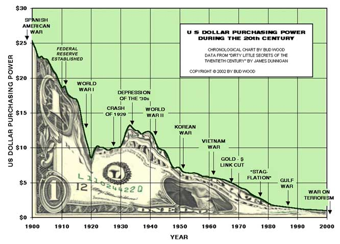
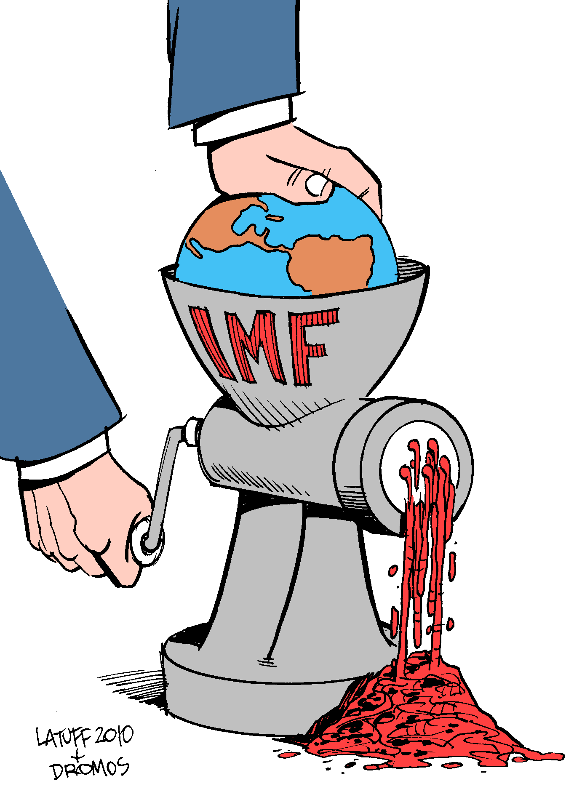
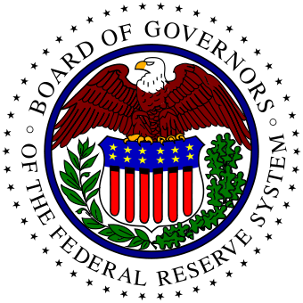
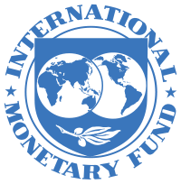
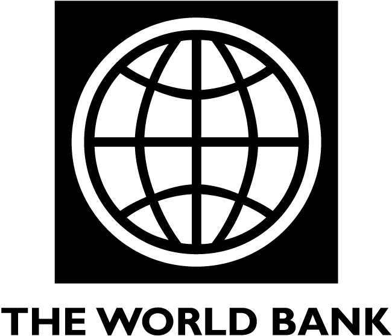
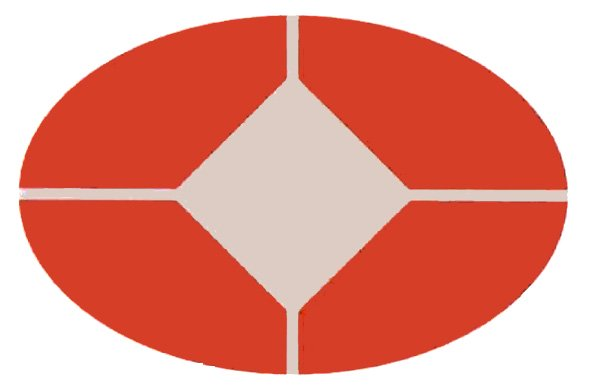

How To Take Back Our Country From the Global Elites
Wisdom-Square › Follow The Money › How To Take Back Our Country From the Global ElitesFor a quick review let’s go over how the I.R.S. collects taxes with inflation added on. See, the more they print the less value each dollar has. With a monetary system, inflation in some form is inevitable (sooner or later some store clerk will try to raise his prices and cause a chain reaction until the public gets fed up). But these people have bypassed the system using it to their advantage, so that they never lose value on their money. Meanwhile, for us this means:
- A movie ticket price jumps from .23 cents (1955) to $10 (2012).
- Gas was .31 cents a gallon (1962) and now is around $4.
- A gallon of milk was .49 cents (1962) but is now $4.
- A case of Budweiser was .99 cents (1960) and is now around $10.
- A new car was $2,600 (1960) vs. $32,000 today.
- An average house was 12,700 (1962) and is now $150,000-$250,000.
- Admission to Penn University was $1,250 (1960) and in (2011) was $42,098.
- And an ounce of gold was $35 (1955) and now is about $1,670.

Ever since the invention of the Federal Reserve, money has lost its “purchasing power” by 97%. Normally there’s no way these prices would jump that much in such short time, it’s all because the Federal Reserve continues to print excess money. As an effect, it decreases the value of our money and we’re taxed more and more so that if we were making $150 a day in the 1950’s we still would be making $150 a day in 2012 after taxes. But now the value of that money has dropped considerably, since the things we need to buy has gone up due to inflation. And this is a vicious cycle that continues, the higher the inflation, the more of the money they take so you never earn any more money than you would had in the past, while prices for living continue to rise along with the inflation. See now what’s going on… it is thievery. The greatest thief of human history; done right under the public’s nose... your taxes do not go to our government like you thought. The I.R.S. collects a large portion of your personal income taxes to be paid directly to the private centralized bank called the Federal Reserve. They’re taking our property away right in front of our eyes just like Thomas Jefferson said they would.
Now I’m sure you have a great understanding of what’s really going on. But you may still be afraid to share this information or even think about what one person could possibly do. Well, ready to be pushed over the edge by learning one last thing?
|
 |
If you ask around whose people’s favorite president, you’ll receive quite a few responses. George Washington, Abraham Lincoln, Franklin D. Roosevelt, Theodore Roosevelt, Thomas Jefferson, and more recently many will say John F. Kennedy. The one thing that all these presidents have in common (along with a few other presidents) is that they were honest above all else, and where not afraid to stand and fight for what they believed in to better our nation no matter their opponent. John F. Kennedy did just that, he decided it was time to end this rule a private bank had over our country. He made it his mission to free each and every citizen from the bankers’ tyranny over us. He fought the bank. He was quoted for saying:
“For we are opposed around the world by a monolithic and ruthless conspiracy that relies primarily on covert means for expanding its sphere of influence--on infiltration instead of invasion, on subversion instead of elections, on intimidation instead of free choice, on guerrillas by night instead of armies by day. It is a system which has conscripted vast human and material resources into the building of a tightly knit, highly efficient machine that combines military, diplomatic, intelligence, economic, scientific and political operations.” Address before the American Newspaper Publishers Association – April 27, 1961
What makes him so special though, is that he is our last president to fight the bank, now called the Federal Reserve. On June 4th, 1963 Kennedy signed executive order number 11110. This executive order empowered the U.S. Treasury to issue REAL money without the Federal Reserve. Correcting what President Woodrow Wilson did to our country. It would have worked too. Kennedy’s plan to dismantle the Federal Reserve’s system had begun. But then something terrible happened just 6 months later. As you probably already know… he went to Dallas, to never return.
That’s right the Federal Reserve, these bankers, hired another assassin, but this time for Kennedy. Unfortunately, unlike Thomas Jefferson and Andrew Jackson… the assassin was successful and killed Kennedy while sitting next to his wife and “security team” in an open car in broad daylight greeting the public. Obviously, they had inside people to be able to pull something like this off… I mean just stop and think about it, if his security team really were there to protect him would there be any way he would be killed in broad daylight? You can look into it to get more information; but it’s painfully obvious when you just look at the facts alone with an open mind (I recommend clicking here if you’re still unsure though). Unfortunately, in real life you’re not guaranteed to win just because your cause is just (click here to read about “economic hitmen” / paid assassins in other nations, yes quite a few leaders of nations have been killed for going against the Federal Reserve in order to protect their country from them). And with that the new President, Lyndan Johnson, threw out Kennedy’s order. Since J.F.K. no president has dared to confront the secret powers behind the Federal Reserve.
|
 |
 |
 |
 |
And so today, the House of Rothschild dominates the world financial machine, along with the house of Morgan, Rockefeller, Kuhn-Loeb, Goldman-Sachs, DuPont, Citi Bank, Merrill Lynch, Bear Stearns, and others. They consolidate bigger and bigger banks, while printing more and more money (note: it’s not so much the actual “family” of Rothschild’s that’s the concern now… it’s the “idea” of them that persists today of a select few controlling the many that threatens us more). This makes them richer, while the rest of the world gets poorer. Only the people in charge of the money in this “monetary society” have real control and power. They are accountable to no one, while destroying our nation’s wealth for the benefit of a few. This type of financial control in private hands constitutes a world system capable of dominating entire economies as seen in much of Africa and across Europe (especially with the aid of their invented unified currency, the Euro, more on this later). Through their private global entities such as the International Monetary Fund (IMF), World Bank, and International Bank of Settlements, their financial grip is overwhelmingly powerful. In America, this cartel's biggest lever of power is the Federal Reserve System.
So what can we focus on doing that would aid our country and each other today?
- For starters, using your debit card is about to get more expensive. Tell congress “no!” by visiting: Dontmakeuspay.org and Reason.com. By getting involved in with these two websites, you can help give the public a better fighting chance.
- Bank locally… this helps to support financial diversity, remember monopolies in general are not better.
- Buy and invest responsibly; when you make a purchase you’re not just getting what you paid for, but also supporting the company’s principles and ensuring they stick around. So make sure they deserve to stick around before you so easily give them your support and money.
- You can join the movement to audit and end the Federal Reserve. Click here to sign the petition to our congress.
- Next, how do you bridge the gap between your friends and family members that may not know anything? You need to stay informed, which although you are now, you must continue to be. And then you can speak up and connect with others. The book “End the Fed” by Ron Paul is an excellent example of someone not afraid to speak up. But how do you spread the word if others aren’t going to commit to reading or watching a documentary? Let’s face it, all this information can get boring just reading it after a while. But there is an excellent video that spreads the same message produced as a cartoon, click here to watch it. Something like this should be seen and discussed in high schools and colleges. Speaking honestly about all aspects of our current economics, instead of just saying it’s the best and everyone should follow it, can only better it. Oh and please spread this lesser known video by clicking here to watch it. Watch the whole thing, it proves to be the funniest and saddest thing to watch. Why this isn’t on every news channel everywhere I don’t know, or maybe I do know why since the media is controlled (thank goodness for the internet’s freedom).
- Hank Paulson is one person to be weary of today, as he currently serves as our Untied States Secretary of the Treasury… and like the others before him in his position; he has strong ties to the Federal Reserve. This shouldn’t be the case if we ever wish to gain our independent from the Federal Reserve’s never ending debt they hold over our country. To see great change there must be great action amongst us all…. civil disobedience, put marches together, vote for people who want to shake the system up (especially if they’re running for the Secretary of Treasury). Like Ron Paul, that is how we change things. Another great resource to follow along with is the group called Anonymous. This mysterious group (since no one can track who they are) has been spreading their call to protest on a number of important issues. They spread their messages through viral videos, mostly through YouTube, which is an amazing idea to unite us.
This is why it matters to you and your kids, the future of America and the world for that matter. Why are we putting so much trust into people, when their motivation is an expansion of influence and personal gain? They make all the major decisions for us, but if they make a bad decision it doesn’t affect them at all. That makes no sense. Why would we allow others to make decisions about our lives that don’t affect them either way? Why put our fates in the hands of the elite; they all come from the same schools and know each other. Why hand this over to guys that think their smarter than everybody else, than for the free market to be able to make decisions. It all comes down to other people being reasonable for our lives. At some point there is a mathematical stopping point in our current economic system due to inflation, and this is really irresponsible. This is the reason we’re losing our middle class and big business is out of control. We don’t have free markets and we don’t have real money. Things that we are told help the common man, is really destroying the common man. Protest, Vote, and spread the word.
“He who sacrifices freedom for security deserves neither.” -Benjamin Franklin